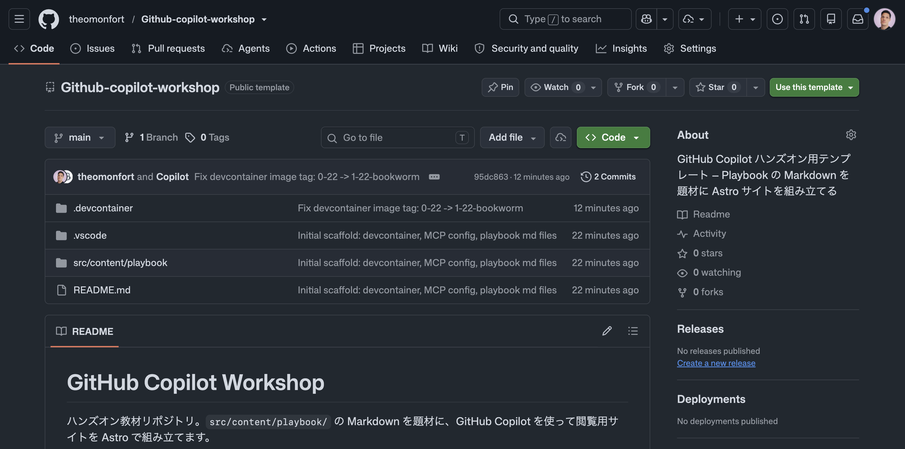
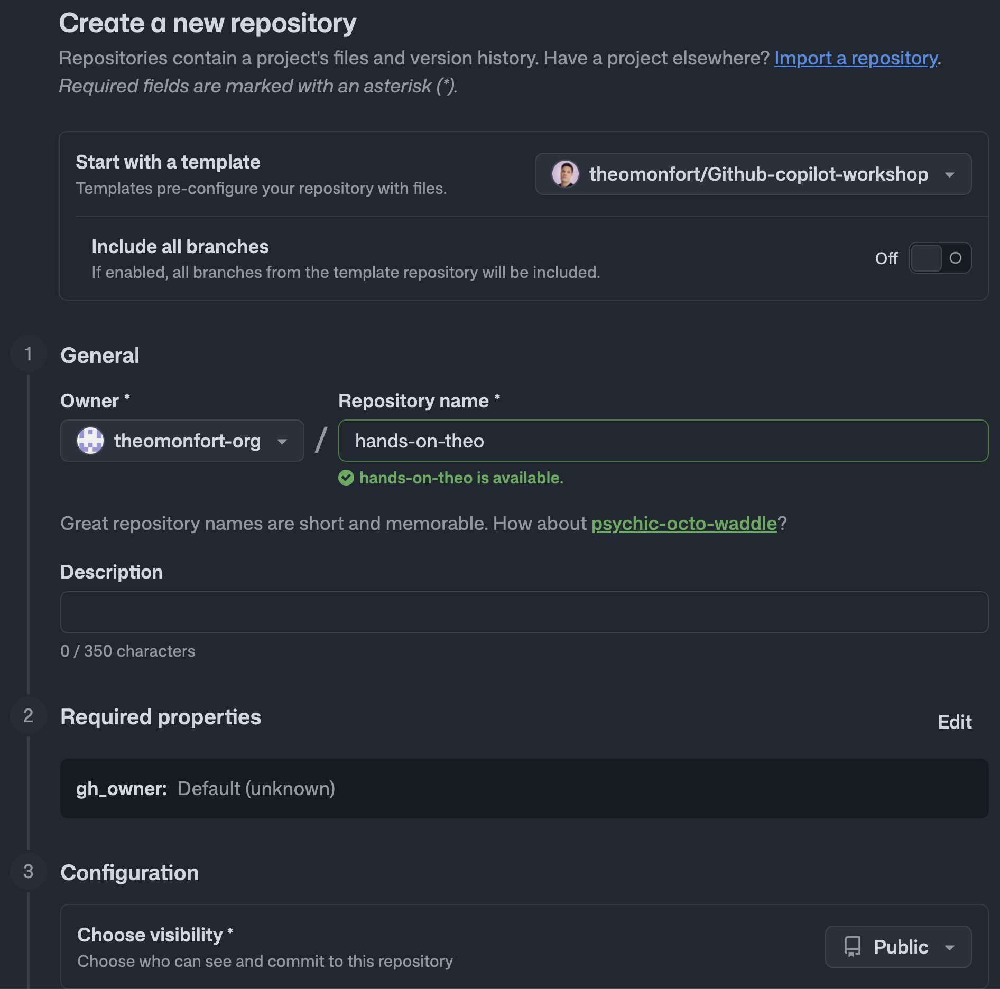
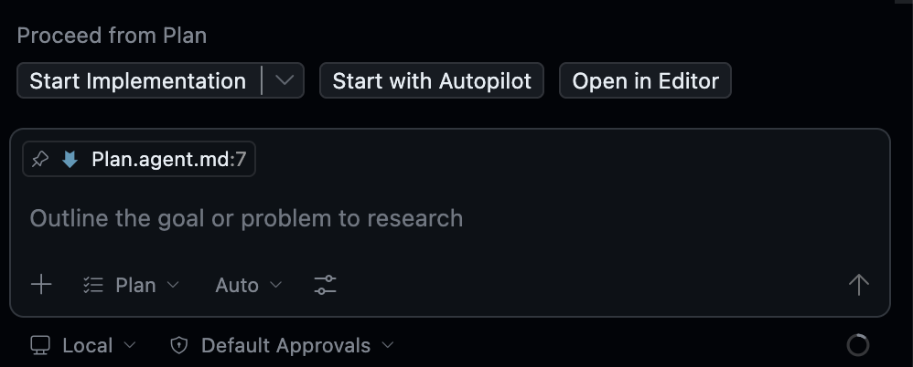
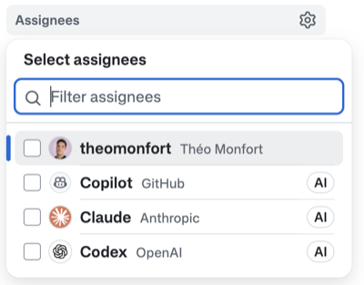
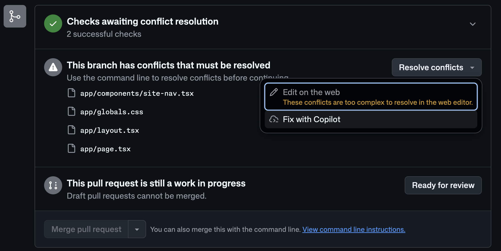
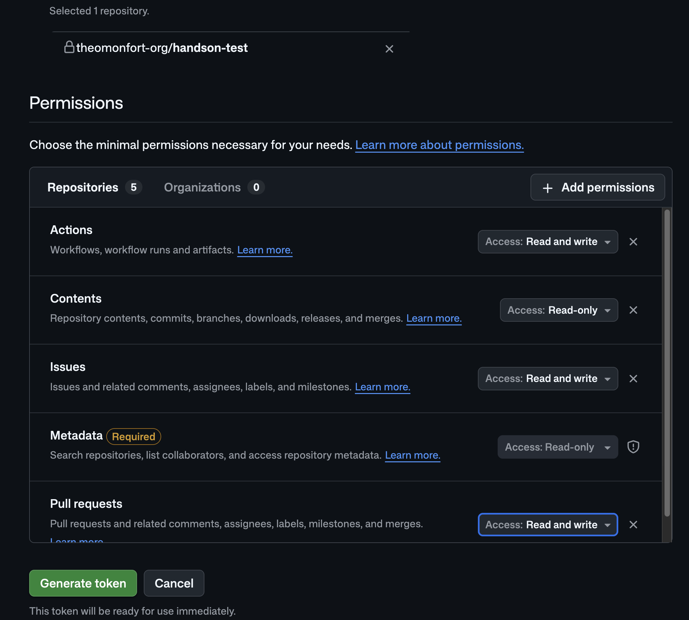
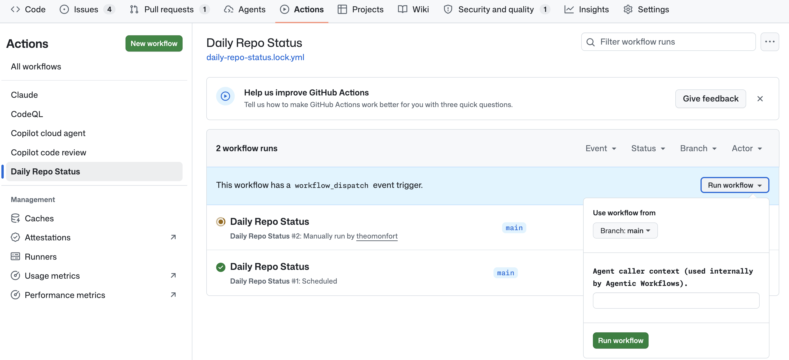

GitHub Copilotワークショップへようこそ！
この勉強会では、Copilot Playbook で紹介されているシンプルな概念を実際に手を動かして体験します。
PLAN → CODE → REVIEW → TEST & SECURE → OPERATE のフェーズに沿って GitHub Copilot を使い、最終的には Playbook の簡易版（Markdown を綺麗に閲覧できるサイト）を Copilot と一緒に作り上げます。
以下の環境をご用意ください：
このワークショップでは、以下の GitHub リポジトリを使用します：
プロジェクトURL: https://github.com/theomonfort/Github-copilot-workshop

hands-on-yourname）
DevContainer が自動的に Node.js 22 環境をセットアップし、以下が事前にインストールされます：
gh）.vscode/mcp.json、自動検出有効化済み）@github/copilot）src/content/playbook/ に Markdown ファイルが配置されています。これらが今日のサイトの題材です。
VS Code のエクスプローラで src/content/playbook/ を開き、いくつかファイルを覗いてみてください。後ほど Copilot にこれらを「グリッド + 詳細 + プレゼンテーションモード」で閲覧できるサイトに仕立ててもらいます。
このステップでは、Copilot に外部ツールへのアクセスを与える MCP（Model Context Protocol）Server を確認・追加します。MCP を整えると、Copilot が Issue 作成・最新ドキュメント参照などを直接実行できるようになります。
このリポジトリには既に GitHub MCP Server が .vscode/mcp.json に設定されています。Codespace 起動時に VS Code が自動的に接続を確認します。
.vscode/mcp.json を開いて、以下の設定があることを確認してください：
{
"servers": {
"github-mcp-server": {
"type": "http",
"url": "https://api.githubcopilot.com/mcp/"
}
}
}
Copilot Chat の入力欄にある 🔧 ツールボタン（モデル選択の右側）をクリックして、github-mcp-server のツール（Issues / PRs / code search など）が一覧に表示されていることを確認しましょう。
⏱ 約1分
Context7 は、ライブラリやフレームワークの 最新の公式ドキュメント を Copilot に取り込める MCP Server です。Astro / Tailwind / TypeScript など、進化の速いフレームワークを使う本ワークショップでは欠かせません。
https://mcp.context7.com/mcp を貼り付けインストール後、.vscode/mcp.json に context7 が追加されていることを確認してください：
{
"servers": {
"github-mcp-server": { "type": "http", "url": "https://api.githubcopilot.com/mcp/" },
"context7": {
"type": "http",
"url": "https://mcp.context7.com/mcp"
}
}
}
動作確認として、Copilot Chat で以下を試してみましょう：
Context7 を使って Astro の content collections の最新ドキュメントを要約してください。
⏱ 約2分
Instruction ファイルは、リポジトリやファイル単位で Copilot に 常駐ルール を与える「指示書」です。チーム全員の Copilot が同じ規約に従うようになります。
このステップでは、2 種類の Instruction ファイルを作成します：
.github/copilot-instructions.md — リポジトリ全体に常時適用 (言語・Stack・規約).github/instructions/frontend.instructions.md — フロントエンド系ファイルにのみ適用される Path Instruction（デザイントークン）Copilot Chat で以下のプロンプトを貼り付けてください：
.github/copilot-instructions.md を作成してください。本文はすべて日本語で書いてください。
内容は以下のとおりにしてください：
# Copilot Instructions
## 言語
- すべての応答・コメント・コミットメッセージ・PR 説明は **日本語** で書く。
## Stack
- **Astro** のみ。Next.js・React Router・SvelteKit は使わない。
- ページ・レイアウトは Astro コンポーネント (.astro) を使う。
- マークダウンコンテンツは Astro の **content collections** (src/content/) を使う。
- スタイルは Tailwind CSS。必要に応じてスコープ付き <style> ブロック。
- TypeScript をすべての場所で使う (.ts, .astro frontmatter)。
## 規約
- ページは src/pages/。
- 再利用 UI は src/components/。
- マークダウンは src/content/<collection>/*.md。スキーマは src/content.config.ts。
- パッケージマネージャは **pnpm**。
⏱ 約2分
特定のファイルパターンにだけ適用される Path Instruction を作成します。VS Code は applyTo の glob にマッチするファイルを触るときだけ、このルールを Copilot に渡します。
Copilot Chat で以下のプロンプトを貼り付けてください：
.github/instructions/frontend.instructions.md を作成してください。
本文はすべて日本語で書いてください。先頭の YAML frontmatter は以下のとおりにしてください：
---
applyTo: "**/*.{astro,css,tsx,jsx,ts,js,html}"
description: "フロントエンドのデザイントークン（レトロ JRPG テーマ）"
---
本文は以下を日本語で含めてください：
# フロントエンド設計ルール
スタイル・コンポーネント・レイアウトを触るときは、以下のトークンを必ず適用する。
## テーマ
レトロ JRPG / サイバーパンクのアーケード。暗い背景にネオンのアクセント、ピクセル系タイポグラフィ。
## カラー
| 役割 | Hex | 用途 |
| ----------------- | ---------- | --------------------------------- |
| 背景 (ベース) | `#05060f` | body / page |
| 背景 (パネル) | `#0a0e27` | カード・サイドバー |
| ネオンマゼンタ | `#ff2e88` | プライマリアクセント・アクティブ |
| ネオンシアン | `#00f0ff` | セカンダリ・ホバー・リンク |
| アンバー | `#ffb000` | 警告・ハイライト |
| フォスファ緑 | `#9bbc0f` | 成功・CRT 風テキスト |
| テキスト (通常) | `#e6f1ff` | 暗い背景上の本文 |
| テキスト (薄) | `#7a8aa8` | 補助テキスト |
## フォント
- 見出し / UI: **`'DotGothic16'`** (ピクセル)、fallback `monospace`。
- 本文 (日本語 + ラテン): **`'Noto Sans JP'`**、fallback `system-ui, sans-serif`。
- コード: `'JetBrains Mono', 'Menlo', monospace`。
Tailwind ユーティリティ: `font-pixel` (DotGothic16)、`font-body` (Noto Sans JP)。
## エフェクト
- 画面オーバーレイに控えめな CRT スキャンライン。
- ネオングロー: `text-shadow: 0 0 8px <color>` / `box-shadow: 0 0 12px <color>`。
- ボーダー: `1px dashed` または `2px solid` のネオンカラー。
- コントラストは高めに。淡いパステルグラデは禁止。
## してはいけないこと
- 明るい / 白の背景。
- 完全な丸 (pill) 形状。角丸は最大 4px まで。
- 灰色のソフトドロップシャドウ。グロー (neon glow) のみ使う。
⏱ 約2分
Agent Skill は、Copilot に「特定のタスクのこなし方」を仕込む再利用可能な指示セットです。プロンプトに合致したときに自動で召喚され、毎回テンプレを説明し直す必要がなくなります。
このステップでは、Issue を整った形で書ける Skill を入れて、実際に Issue を 1 件作ってみます。
theomonfort/skills から github-issues Skill を入れます。このスキルは bug report / feature request / task など複数のテンプレを持ち、ラベル・優先度・依存関係まで含めた構造化された Issue を書けるようになります。
VS Code のターミナルで以下を実行してください：
gh skill install theomonfort/skills github-issues
実行すると CLI から 対象エージェント と インストール先（scope） を選ぶよう聞かれます：
copilot を選択（VS Code の GitHub Copilot Chat 用）project（プロジェクト = このリポジトリ専用にインストール）インストールが完了すると .agents/skills/github-issues/SKILL.md が追加されます。中身を開いて Copilot がどんなときにこの Skill を呼ぶのか、どんなテンプレを持っているのかを確認してみてください。
⏱ 約1分
GitHub MCP Server + github-issues Skill を組み合わせて、構造化された Issue を 1 件作成します。Copilot Chat で以下のプロンプトを入力してください：
github-issues skill を使って、このリポジトリに以下の Issue を作成してください。
ユーザーストーリー・受け入れ基準・実装ノートを含む構造化された feature request にしてください。
タイトル: Add English support on the website
背景:
- 現在サイトはすべて日本語で書かれている。海外のエンジニアにも届けたい。
要件:
- Astro の i18n ルーティング (`/en/...`) で英語版を追加する。フォールバックは日本語。
- ナビゲーション・ボタン等の UI 文字列は src/i18n/ja.ts / en.ts に切り出す。
- src/content/ のマークダウンは ja / en の両言語を併設できる構造にする。
- 言語切替トグルをサイトのヘッダーに追加する。
受け入れ基準:
- /en/ ルートでサイト全体が英語で閲覧できる。
- 翻訳が無いページはフォールバックで日本語を表示し、上部に warning banner を出す。
- 既存の SEO (sitemap, OG tags) が両言語で正しく出力される。
ラベル: feature, i18n, frontend
⏱ 約2分
ここまでで PLAN 側 (MCP・Instruction・Skill) のハーネスが整いました。いよいよ Copilot Chat の Plan モード で実装計画を立て、Agent モードで一気に実装します。
Copilot Chat 画面下部のモデルセレクターをクリックし、Claude Opus 4.6 を選択します。
Copilot Chat のモード切替えから 「Plan」 を選択してください。
以下のプロンプトをそのままコピーして Copilot Chat に貼り付けてください：
小さな Astro サイトを作ってください（日本語のみ。i18n / 英語対応は不要）。新しいブランチ（例: feature/playbook-site）で作業してください。
- グリッドのインデックスページ：src/content/playbook/*.md の各マークダウンエントリーを 1 タイル表示する（アイコン + タイトル + 短いサマリーを載せたクリック可能なカード）。
- タイルをクリック → そのエントリーの詳細ページが開き、マークダウン全文をスクロール可能に表示する。
- 詳細ページで「P」キーを押す → Presentation モードのトグル：
* 各 ## 見出しが 1 スライドになる。
* ← → でエントリー内のスライド間を移動。
* ↑ ↓ で前後のエントリーへ移動。
* Esc で Presentation モードを抜ける。
- Presentation モード時の左サイドバーは全エントリーの目次にし、現在表示中のエントリーをハイライトする。
Copilot がいくつか質問してくる場合があります（例：パッケージマネージャー、UI フレームワーク、デプロイ先など）。copilot-instructions.md を読んでいるはずなので Astro / Tailwind / pnpm を前提に答えてくれるはずですが、不足があれば回答してあげましょう。
⏱ 約3分
Plan に納得したら 「Start with Autopilot」 をクリックして実装を開始します。

⏱ 約15〜20分
Copilot が以下を自動で実行します：
src/content.config.ts で playbook collection を定義実装が完了したら開発サーバーを起動して確認しましょう：
pnpm dev
ポートフォワーディングの通知から 「ブラウザで開く」 をクリックして動作確認してください。
実装が動いたら、PR を作る前に Copilot Code Review をハーネスに組み込みます。copilot-instructions.md のルール（言語・Stack・コードレビュー観点）が自動でレビューに反映されます。
まず、Copilot Code Review の設定を確認します。
PR 作成時に Copilot が自動的にコードレビューを行うように設定します。Code review 設定ページから直接 Ruleset を作成すると速いです。
セクション 6 で作ったサイトをリモートに push して PR を作ると、7.2 で設定した Ruleset で Copilot Code Review が自動実行されます。Copilot Chat の Agent モードに任せましょう：
現在のブランチの変更をコミットして push し、main に対する PR を作成して。タイトルと本文は変更内容を要約して日本語で。
PR が開くと、Copilot Code Review が自動的に走ります（⏱ 約5分）：
Copilot のレビュー提案を修正する方法は2つあります：
Fix batch with Copilot をクリックすると、修正内容を含む 新しい PR が自動的に作成されます（⏱ 約15分）。
依存関係の脆弱性チェックを Dependabot で有効化します。設定は数クリックで完了します。
.github/dependabot.yml のテンプレートが表示されますpackage-ecosystem: "" を "npm" に変更（本リポジトリは pnpm / npm エコシステム）： version: 2
updates:
- package-ecosystem: "npm"
directory: "/"
schedule:
interval: "weekly"
コードに潜むセキュリティ脆弱性を静的解析でスキャンする CodeQL を有効化します。
Presentation モードの キーボードナビゲーション が壊れないように、Playwright で E2E テストを書き、PR ごとに自動実行する Actions ワークフローを作ります。
Copilot Chat（Agent モード）で以下を入力してください：
新しいブランチ `test-creation` を作成して、そのブランチで作業してください。
Presentation モードのキーボードナビゲーションを検証する Playwright E2E テストを作成してください。
前提：
- src/content/playbook/ に少なくとも 2 件のエントリーがあるとする。
- 詳細ページの URL パターンは `/playbook/[slug]`。
テストケース：
1. 詳細ページで `P` を押すと Presentation モードに入る（DOM の状態クラスやサイドバー表示で確認）。
2. Presentation モード中に `←` / `→` を押すとエントリー内のスライドが前後に移動する（## 見出しごとに 1 スライド）。
3. Presentation モード中に `↓` / `↑` を押すと次 / 前のエントリーに移動する（URL が変わる）。
4. Presentation モード中に `Esc` を押すと通常の詳細ページに戻る。
5. 左サイドバーに全エントリーが目次として表示され、現在のエントリーがハイライトされている。
ファイル配置:
- テストは tests/e2e/presentation.spec.ts に配置。
- 必要なら playwright.config.ts も更新してください（baseURL、webServer に pnpm dev を起動する設定）。
テストを書き終えたらローカルで `pnpm exec playwright test` を実行して全部 pass することを確認してください。
⏱ 約5分
続けて Copilot Chat に以下を入力してください：
同じ `test-creation` ブランチで作業してください。
.github/workflows/test.yml を作成してください。
PR の作成・更新時にトリガーし、以下を実行してください：
1. Node.js 22 をセットアップ
2. pnpm をセットアップ
3. 依存関係をインストール
4. Playwright のブラウザをインストール（npx playwright install --with-deps chromium）
5. `pnpm exec playwright test` を実行
6. テスト失敗時は Playwright のレポートを artifact としてアップロード
⏱ 約2分
PR を作成し直すと、Actions タブで test.yml の実行が確認できます。Presentation モードの挙動を変更したときにこの workflow が早期に壊れを検知してくれます。
Cloud Agent を使用するために、以下の設定を確認します：
Step 1.4 で作成した Issue の中から、Cloud Agent に実装させたい Issue を開きます。

アサイン時に以下をカスタマイズできます：
Cloud Agent が作成した PR は Draft（下書き） 状態で作成されます。

Cloud Agent の PR がマージされたら、Codespace で最新のコードを取得してサイトを確認しましょう。
git checkout main && git pull && npm install && npm run dev
ポートフォワーディングの通知が表示されたら 「ブラウザで開く」 をクリックして、Cloud Agent が実装した新機能を確認してください。
Copilot CLI は、ターミナル上で動作する対話型 AI アシスタントです。VS Code を開かずに、コード生成・レビュー・リファクタリングなどを自律的に実行できます。
ここでは Part 6 の最後で作成した Issue 群 を、CLI から /fleet で 並列に 実装してもらいます。
コマンド | 説明 |
| AI モデルの選択（Claude / GPT 等） |
| モード切り替え（plan / agent） |
| 確認なしでツール実行を許可（Autopilot） |
| 複数エージェントを並列で動かす |
| 実行中の fleet タスクの状態を確認 |
| セッション履歴・利用状況の分析 |
| 前回のセッションを再開 |
まず、最新のコードを取得します。Cloud Agent や Code Review から PR がマージされているはずなので、ローカルブランチも更新しておきます：
git checkout main
git pull
そして VS Code のターミナルで Copilot CLI を起動：
copilot
CLI 内で以下を実行：
/allow-all
/model
最も高性能なモデル（例: Claude Opus 4.6）を選択してください。
そして Shift+Tab で Agent (Autopilot) モード に切り替えます。
/fleet で Issue を並列に実装するPart 6 で作成した 3〜5 件の Issue を、CLI に並列で実装させます。プロンプトの最後に、別モデル（Codex 系）でラバーダックレビューさせる指示も含めます。
/fleet このリポジトリの open Issue のうち、label が bug または enhancement のものをすべて、
1 Issue につき 1 つの fleet エージェントを割り当てて並列で実装してください。
各エージェントは以下のフローで作業すること：
1. Issue 番号と一致するブランチ (fix/<number>-<slug>) を切る
2. 修正を実装する
3. pnpm dev で動作確認できる状態にする
4. コミットして PR を出す（`Closes #<number>` を本文に入れる）
すべての PR が作成されたら、最後に **GPT-5 Codex** モデルに切り替えて
（実装させた Claude とは別モデルで盲点を避けるため）、
作成された全 PR の差分を読みラバーダック視点でレビューしてください。
観点：設計上の盲点・ロジックバグ、Issue 要件の漏れ、既存コードとの整合性、
テスト・エラーハンドリングの不足。スタイルや軽微な指摘は無視し、
本当に重要な問題だけ PR 単位で簡潔に列挙してください。
⏱ 約10〜15分
CLI が複数の fleet エージェントを spawn し、それぞれ別ブランチで実装 → PR 作成まで自律的に進めます。進捗はターミナルにストリーム表示され、最後に別モデルでのラバーダックレビューが出力されます。
実行中・実行後の進捗を確認するには：
/tasks
各 fleet エージェントの状態（実行中 / 完了 / 失敗）と現在のステップが一覧表示されます。
最後に、ワークショップ中の Copilot CLI 利用状況を Chronicle で振り返ります：
/experimental
chronicle
GitHub Actions と Copilot（AI）を組み合わせることで、コードの変更を検知して自律的なタスクを自動実行する Agentic Workflow を体験しましょう。
Agentic Workflow とは: GitHub Actions のワークフロー内で Copilot を活用し、リポジトリの変更に応じた自律的なタスク（レポート生成、ドキュメント更新、コード修正など）を実行する仕組みです。
まず、Agentic Workflow の CLI ツールをインストールします。
ローカル環境の場合：
gh extension install github/gh-aw
Codespaces やネットワーク制限がある環境の場合（GA 前のため）：
curl -sL https://raw.githubusercontent.com/github/gh-aw/main/install-gh-aw.sh | bash
Agentic Workflow で Copilot を活用するために PAT を作成します。
copilot-workshop-agent
3. 作成した PAT をコピーCOPILOT_GITHUB_TOKEN、Value: 作成した PAT今日のリポジトリ活動を自動レポートする Agentic Workflow を作成しましょう。
エージェントモードで以下を実行：
以下の Agentic Workflow を作成してください。
ファイル: .github/workflows/daily-repo-status.md
目的: リポジトリの活動（Issue、PR、コード変更）を分析し、
日次ステータスレポートを Issue として自動作成する。
フォーマット:
- YAML front matter で設定を定義（on, permissions, tools, safe-outputs）
- Markdown 本文でワークフローの指示を記述
設定:
- トリガー: schedule: daily と workflow_dispatch
- permissions: contents: read, issues: read, pull-requests: read
- tools: github（lockdown: false, min-integrity: none）
- safe-outputs: create-issue で title-prefix "[repo-status] "、
labels: [report, daily-status]、close-older-issues: true
ワークフローの指示:
1. リポジトリの最近の活動（Issue、PR、コード変更）を収集
2. 進捗やハイライトを分析
3. 結果を GitHub Issue として作成
参考: https://github.com/githubnext/agentics/blob/main/workflows/daily-repo-status.md
完了したら `gh aw compile` コマンドを実行してワークフローをコンパイルし、
変更をコミットして PR を作成してください。
PR をマージした後、Actions タブからワークフローを手動実行します：

実行完了後（⏱ 約2分）、リポジトリの Issues タブに [repo-status] というプレフィックスの Issue が自動作成され、今日の PR、Issue、コード変更の活動サマリーが表示されます。
余裕がある方は、テストカバレッジレポートを自動更新するワークフローも作成してみましょう。
エージェントモードで以下を実行：
以下の Agentic Workflow を作成してください。
参照: https://github.com/github/gh-aw/blob/main/create.md
ワークフローの目的：
- main ブランチへの push 時にトリガー
- テストを実行してカバレッジレポートを生成
- カバレッジ結果を README.md のバッジとして自動更新
- 変更がある場合は PR を自動作成
ワークフローファイルは .github/workflows/coverage-update.md に配置してください。
このワークショップでは、GitHub Copilot を PLAN → CODE → REVIEW → TEST & SECURE → OPERATE のフェーズに沿って横断的に体験しました：
copilot-instructions.md と Path Instruction で Copilot の前提・スタイル・言語を固定するgh-aw で AI を組み込んだ自律的な CI/CD を構築する/init → Plan → Agent の順で活用してみる